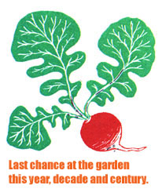
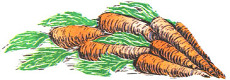
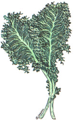

SEASONS OFEARTH AND SKY
The growing season is at an end for the year, for The decade of the 1990s and for the century, if you can believe it. But a late-fall walking tour of the snoozing garden is in order to prepare for the first harvest of the new millennium .
Before a final tilling it's good to go over the land carrying a stout shovel. A nursery spade with a narrow, foot-long transplanting blade is best if you have one. If you've let much of the soil grow up in weeds (and don't we all once the growing season becomes too short to mature even a fall crop of leaf lettuce?), you may have admitted burdock (the source of those infernal prickleburrs that dogs like to "harvest" with their coats) or other tap-rooted biennials or perennials that will outgrow any new-seeded crop next year. Look for circular (basal) rosettes of leaves lying flat to the ground. They are one to six or eight inches across and are different shades of dusty gray-green in color. They are alive, if dormant, and sleepy looking, even by plant standards.
Sink your spade straight down, deep and close beside each rosette and dig it out with as much root as you can get. Rototill the crowns under; they won't sprout from chopped stem and rosette, and the remaining deep root will rot away to nourish your future crops. If you can identify the plant absolutely as burdock from its rhubarb-like leaves, try cooking the peeled root for 30 minutes or so. It eats like parsnip.
This is also the best time to kill the season's worth of weed seed the wind has blown into your garden soil. A fall tilling will bury many but not all, and buried weed seed can be disinterred with spring cultivation. Before bringing out the rototiller for the last time, go over bare ground and weed trash with a propane flame-weeding torch if you have one. if you don't, they go for $20 and up in the Harbor Freight and other discount tool merchants' catalogs.
Burning old plant growth will reduce it to ash, which will help sweeten the soil for next season. But before you light up, be sure the surrounding vegetation is wet from a fall rain or early snow so that you don't cause a wildfire.
To protect any carrots or spinach you are over wintering in the sod from the desiccating winds the coming months are sure to bring, put on a weed-seed-free winter mulch of salt hay, wood chips, pine needles or long lasting oak leaves. To keep leaves or other loose mulch from blowing away, cover the pile with green brush cut from the edges of a nearby wood. Choose leggy branches and next April you can 'plant" them beside your earliest green peas to support the vines. To give over wintering crops a gentle warming boost in spring, you can interlayer between the natural mulch and the green brush cover with sheets of black plastic mulch, which you'll have to retrieve in spring, or else with landscape paper, which can later be torn (to let plants emerge), composted, burned or tilled under. Lacking brush, the sheeting must be held down with rocks along the edges and saplings or tomato stakes laid across, to keep it from flapping and tearing away in the winter winds.
We've increased our experimental fall plantings to try to get a head start on spring crops. It's no guarantee-some years work well, others not so well, largely depending on what kind of weather spring brings. But it's generally worth a try.
Nearly all seeds are dry and hard enough to survive winter temperatures; indeed, some require a period of winter cold to sprout at all in spring. It is the prolonged chill and wetness of early spring soil that dooms the seed of many plants that evolved in climates that are warm year-round. Soaked and chilled for weeks before the soil warms up enough for them to germinate, they soften before sprouting to produce a living plant's protective chemical and mechanical processes, and so make easy prey for bugs and soilborne fungus.
The secret to late fall planting for the next season is threefold. First, select frost-hardy varieties that originated in cold climates and do well when planted early in the year. Second, plant them in fall for the earliest possible start. And third, put them in raised rows with a well-draining sand layer on top, so rains will filter through. This way, they won't become waterlogged before they sprout.
As early in the fall as you can, plant open garden soil to green manures to be tilled under, or to winter wheat, oats or rye. These early grain crops will be up and growing before the first snow and will see new root growth during all but the depth of winter. You can harvest a life-sustaining crop of grain in early summer (see "Growing Grains" in MOTHER'S June/July issue for more on raising the staff of life from scratch).
To grow herbaceous vegetables, I like to hoe up raised rows six inches high and the same across. I top each row with as much mature compost as I can spare. Then I pile well-draining sharp sand as high as it will go, perhaps three inches on each row. I plant most seeds, a half-inch deep in the top of the sand and tamp it flat. For the quickest soil-warming, I lay black landscape paper over the rows with slits along the top ridge to let the germinating plants work through. From fall to spring, rains and snowmelt will drain through the waterpermeable landscape paper, sand and raised soil, preventing (we hope) the seed from rotting. And even under snow the black paper will absorb sunlight, warming the soil beneath it. As soon as the soil temperatures are agreeable, the preplanted seed will sprout, often peeking out through a late snowfall. That's how snow peas got their name. When the crop is in, the sand, compost and black-paper toppings are tilled into the garden to improve tilth and drainage.
The following is a list of the crops and varieties that we've had success with in recent years. You'll find them listed in various mail-order catalogs (see "Sources" ). For hearty, oldtime, open pollinated seeds, try South Carolina's RH Shumway (RHS) and the New Mexico based Seeds of Change (SOC). For cold country varieties, contact Johnny's Selected Seeds (JSS) of Maine and maritime Canada's Vesey's Seeds for Shorter Seasons (VSSS).
SNOW PEAS come in two main types: wrinkle-seeded, which are grown mainly for their large, well-flavored seeds, and smooth-seeded, which are grown for smaller seeds and are eaten pod and all. The smooth-seeded are the easiest to overwinter. I've had the best luck with the Dwarf Grey Sugar variety. These are not the Oregon and Sugar Snap varieties that are large, succulent, wrinkled-skinned and selectively bred and copyrighted so we can't legally replant saved seed. Dwarf Grey Sugar is the original little flat snow pea. Pods are best picked when still tiny, before the seeds begin to develop. Even then, they often must be stringed to be at their best. For a seed-producing pea, try Extra Early Alaska. This is also a smooth-seeded, cold-hardy variety. it grows to 30 inches or more. Like the Dwarf Grey Sugar, it does best when planted close together, in parallel rows spaced two inches apart and supported on brush. Both are old-time varieties from RHS.
CORN SALAD , called mache in Europe, is as close to a guaranteed winter garden success as there is. A type of valerian that produces minute lettuce-like heads, it has a flowery, minty flavor and is good in salads-raw, steamed or stir-fried. Super hardy, you can pick it frozen solid and it is still good raw or cooked. Sow the tiny seeds one inch apart in all directions over the top of a raised row and stir down into the sand. Thin seedlings to two inches apart. JSS sells a named variety, Vit, that is recommended for overwintering.
LETTUCE is also a fairly consistent producer. I have not tried any variety recently, but a dependable old standby is Black Seeded Simpson loose-leaf lettuce. Pick the outer leaves and the plants will produce till summer heat causes them to bolt to seed, which you can harvest and plant next year. Most catalogs sell Black Seeded Simpson. Or save a dollar and get seed from any grocery store seed rack.
RADISHES usually do well. Pick a winter radish such as the white daikon. Good ones are Spring Song from JSS and Rebel, a new and vigorous, but still openpollinated (non-hybrid) round red variety from VSSS.
PARSLEY is slow and thus best started in summer and heavily mulched over winter. Choose your variety.
CARROTS . For really early roots, try Thumbelina, a one-inch round carrot that is super fast growing, sweet as any, mini-topped and bite-size. You needn't peel them when about one inch across. Mix tiny seed eith sand, sprinkle on top of a raised row and pat in. Thin to one-and-a-half-inches apart all around for golfball-sized roots. Available from JSS, SOC, RHS, VSSS.
SPINACH is the quickest-growing source of vitamins C and A and iron. Long-Standing or Winter Bloomsdale are among the oldest and most reliable varieties and are available from SOC and RHS. A good F2 hybrid to try is the new disease-resistant, wrinkled Tyee, sold by JSS, RHS and VSSS. Plant the large seeds an inch apart and push them well down into a sand layer atop a raised row. Thin to 12 inches apart. Harvest outer leaves till they bolt, and save the seed only if it's a nonhybrid Bloomsdale.
SCALLIONS will add an oniony savor to any dish. Punch down seeds of any variant of Evergreen Bunching (white or red) scallions-the kind that form slender stems in bunches rather than bulbs They are fast-growing, cold-proof, guaranteed and available from RHS. JSS praises the winter-hardiness of their Evergreen Hardy White.
KALE is a rich source of vitamins A, B and C and contains a great deal of iron. This loose-leaf cooking green is the most coldhardy member of the cabbage family. Winterbore from JSS is a favorite variety, but perhaps the
best for winter growing is the True Siberian from SOC. Plant to raised garden rows in single seed rows, seeds one inch apart. Thin to 18 inches.
SOURCES :
Flame Weeders: Harbor Freight Tools; (800) 423-256; fax: (800) 905-5220; www.harborfreight.com .
Seed: Johnny's Selected Seeds, Foss Hill Road, Albion, ME, 04901; (207) 4374301; www.johnnyseeds.com .
R.H. SchuMway Seedsman, 571 Whaley Pond Road, Graniteville, SC 29829; (803) 663-9771.
Seeds of Change, P.O. Box 15700, Santa Fe, NM 875065700; (888) 7627333; www.seedsofchange.com .
Vesey's Seeds For Shorter Seasons, York, Prince Edward Island, Canada COA 1PO (U.S. P.O. Box 9000, Calais, ME 04619-6102); (800) 363-7333; fax: (800) 686-0329; www.veseys.com .
Burpee Seed Co., 032763 Burpee Building, Warminster, PA 18974; (800) 487-5530; www.burpee.com
|
 ILLUSTRATIONS BY JOANNA ROY |
|
 |
|
 |
|
|